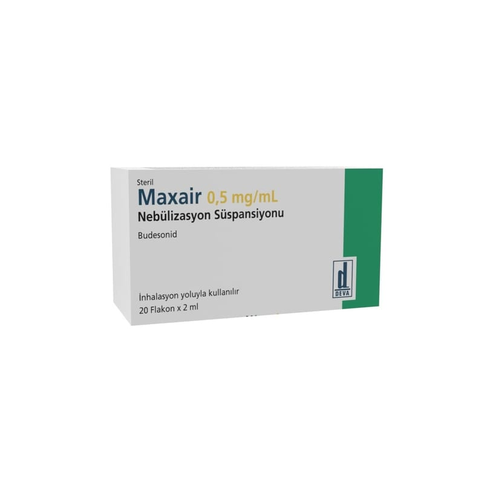

Maxair 0,5 mg/mL Nebülizasyon Süspansiyonu

Ne için kullanılır
KT · Bölüm 1 MAXAİR, glukokortikosteroid olarak adlandırılan budesonid etkin maddesini içeren ve iltihaplanmayı azaltmak için kullanılan ilaçlar grubuna dahildir. Astımınız solunum yollarınızdaki iltihaplanmadan kaynaklanmaktadır. MAXAİR astımın tüm basamaklarında iltihabı gidermek, solunum yolunu genişletmek, hastalık belirtilerini kontrol altına almak ve ağız yoluyla kullanılan steroid (astım tedavisinde de kullanılan, hayat kurtarıcı ilaçlar) ihtiyacını azaltmak amacıyla kullanılır. KOAH’ta (Kronik Tıkayıcı Akciğer Hastalığı) tek başına kullanılması önerilmez. MAXAİR aynı zamanda bebek ve çocuklarda hızlı şekilde ortaya çıkan, hastanede yatış gerektiren, viruslerin neden olduğu bir üst solunum yolu enfeksiyonu olan krup hastalığını tedavi etmek için kullanılır. MAXAİR bir kutu içinde 4 adet saşe ve her saşede 5 adet tek kullanımlık flakon içerecek şekilde kullanıma sunulmaktadır. Her flakon 2 mL beyazımsı süspansiyon içermektedir. Her bir flakon tek kullanım içindir.
MAXAİR, nebülizatör (inhalasyon cihazı) yardımıyla solunmak içindir. Ağız parçası veya yüz maskesi yardımıyla nefes aldığınızda, ilaç nefesinizle birlikte akciğerlerinize kadar ulaşacaktır.
Düzenli olarak doktor tarafından reçete edildiği şekilde kullanılmalıdır. Ancak, MAXAİR başlamış akut astım atağınızı rahatlatmaz.